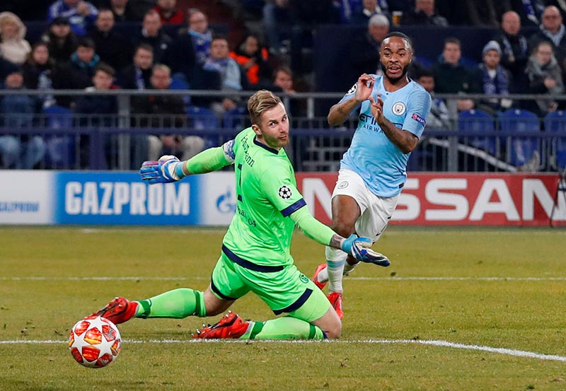

Ten-man Manchester City staged a dramatic comeback with late goals from Leroy Sane and Raheem Sterling securing them a 3-2 win at Schalke 04 in their Champions League Round of 16 first leg on Wednesday that put the English side in the driving seat.Substitute Sane scored against his former club with a sensational free kick in the 86th and Sterling grabbed a 90th minute winner after Nabil Bentaleb converted two spot kicks in the 38th and 45th minutes in Schalke’s own comeback. Sergio Aguero had given City the lead in the 18th and the English champions were left with 10 men in the 68th minute when Nicolas Otamendi was sent off following a second booking. City, who have conceded at least two goals in six of their seven games in the Champions League knockout stages under Pep Guardiola, will also be without yellow-carded Fernandinho for the return leg in Manchester on March 12. “We know that we will get our scoring chances and most of the times we use them,,” scorer Leroy Sane, a product of Schalke’s youth academies, told reporters. “I was a bit lucky that the goal goes in from that position. We did not find it easy to settle in the game and we struggled to find spaces.” Argentine Aguero, who netted two hat-tricks in his previous three Premier League games, scored with a simple tap-in after a pass from keeper Ralf Faehrmann was intercepted. City completely overran the Germans at the start but instead of scoring again, they inexplicably fell back, allowing Schalke to come forward. The Royal Blues were rewarded when a handball earned Otamendi a booking and the hosts a spot kick that Algeria international Bentaleb converted after the use of the video assistant referee (VAR). Schalke then went ahead seven minutes later after earning another penalty when Fernandinho clumsily brought down Schalke’s Salif Sane. Bentaleb again stepped up and scored his second goal of the evening despite keeper Ederson getting his hands on the ball. With coach Guardiola growing increasingly frustrated, the visitors tried for an early goal after the break but this time came up against an organised Schalke backline. To make matters worse for City, Otamendi was sent off with a second booking in the 68th to take any pace left out of City‘s game before Leroy Sane’s missile saved the day for the English side. Sterling then slipped into the box late in the game to grab victory with a dramatic winner. “It is extremely bitter and it hurts,” said Schalke midfielder Daniel Caligiuri. “With an extra player we should have controlled the ball and made it 3-1. We should have solved this situation better.”
Manchester City’s Raheem Sterling scores their third goal during the Champions League Round of 16 First Leg match between Schalke 04 and Manchester City, at Veltins-Arena, in Gelsenkirchen, Germany, on February 20, 2019
Ten-man Manchester City staged a dramatic comeback with late goals from Leroy Sane and Raheem Sterling securing them a 3-2 win at Schalke 04 in their Champions League Round of 16 first leg on Wednesday that put the English side in the driving seat.Substitute Sane scored against his former club with a sensational free kick in the 86th and Sterling grabbed a 90th minute winner after Nabil Bentaleb converted two spot kicks in the 38th and 45th minutes in Schalke’s own comeback. Sergio Aguero had given City the lead in the 18th and the English champions were left with 10 men in the 68th minute when Nicolas Otamendi was sent off following a second booking. City, who have conceded at least two goals in six of their seven games in the Champions League knockout stages under Pep Guardiola, will also be without yellow-carded Fernandinho for the return leg in Manchester on March 12. “We know that we will get our scoring chances and most of the times we use them,,” scorer Leroy Sane, a product of Schalke’s youth academies, told reporters. “I was a bit lucky that the goal goes in from that position. We did not find it easy to settle in the game and we struggled to find spaces.” Argentine Aguero, who netted two hat-tricks in his previous three Premier League games, scored with a simple tap-in after a pass from keeper Ralf Faehrmann was intercepted. City completely overran the Germans at the start but instead of scoring again, they inexplicably fell back, allowing Schalke to come forward. The Royal Blues were rewarded when a handball earned Otamendi a booking and the hosts a spot kick that Algeria international Bentaleb converted after the use of the video assistant referee (VAR). Schalke then went ahead seven minutes later after earning another penalty when Fernandinho clumsily brought down Schalke’s Salif Sane. Bentaleb again stepped up and scored his second goal of the evening despite keeper Ederson getting his hands on the ball. With coach Guardiola growing increasingly frustrated, the visitors tried for an early goal after the break but this time came up against an organised Schalke backline. To make matters worse for City, Otamendi was sent off with a second booking in the 68th to take any pace left out of City‘s game before Leroy Sane’s missile saved the day for the English side. Sterling then slipped into the box late in the game to grab victory with a dramatic winner. “It is extremely bitter and it hurts,” said Schalke midfielder Daniel Caligiuri. “With an extra player we should have controlled the ball and made it 3-1. We should have solved this situation better.”